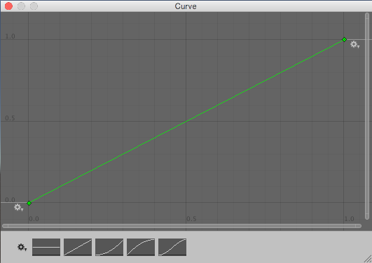
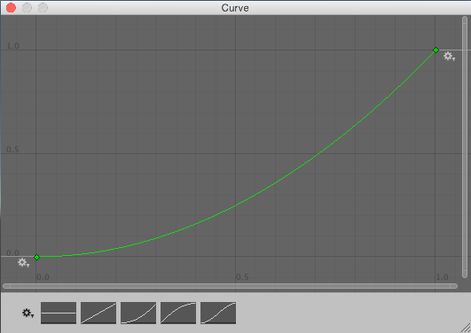

Adding Random Gameplay Elements
Randomly chosen items or values are important in many games. This sections shows how you can use Unity's built-in random functions to implement some common game mechanics.
Choosing a Random Item from an Array
Picking an array element at random boils down to choosing a random integer between zero and the array's maximum index value (which is equal to the length of the array minus one). This is easily done using the built-in Random.Range function:-
var element = myArray[Random.Range(0, myArray.Length)];
Note that Random.Range returns a value from a range that includes the first parameter but excludes the second, so using myArray.Length here gives the correct result.
Choosing Items with Different Probabilities
Sometimes, you need to choose items at random but with some items more likely to be chosen than others. For example, an NPC may react in several different ways when it encounters a player:-
- 50% chance of friendly greeting
- 25% chance of running away
- 20% chance of immediate attack
- 5% chance of offering money as a gift
You can visualise these different outcomes as a paper strip divided into sections each of which occupies a fraction of the strip's total length. The fraction occupied is equal to the probability of that outcome being chosen. Making the choice is equivalent to picking a random point along the strip's length (say by throwing a dart) and then seeing which section it is in.

In the script, the paper strip is actually an array of floats that contain the different probabilities for the items in order. The random point is obtained by multiplying Random.value by the total of all the floats in the array (they need not add up to 1; the significant thing is the relative size of the different values). To find which array element the point is "in", firstly check to see if it is less than the value in the first element. If so, then the first element is the one selected. Otherwise, subtract the first element's value from the point value and compare that to the second element and so on until the correct element is found. In code, this would look something like the following:-
//JS
function Choose(probs: float[]) {
var total = 0;
for (elem in probs) {
total += elem;
}
var randomPoint = Random.value * total;
for (i = 0; i < probs.Length; i++) {
if (randomPoint < probs[i])
return i;
else
randomPoint -= probs[i];
}
return probs.Length - 1;
}
//C#
float Choose (float[] probs) {
float total = 0;
foreach (float elem in probs) {
total += elem;
}
float randomPoint = Random.value * total;
for (int i= 0; i < probs.Length; i++) {
if (randomPoint < probs[i]) {
return i;
}
else {
randomPoint -= probs[i];
}
}
return probs.Length - 1;
}
Note that the final return statement is necessary because Random.value can return a result of 1. In this case, the search will not find the random point anywhere. Changing the line
if (randomPoint < probs[i])
...to a less-than-or-equal test would avoid the extra return statement but would also allow an item to be chosen occasionally even when its probability is zero.
Weighting continuous random values
The array of floats method works well if you have discrete outcomes, but there are also situations where you want to produce a more continuous result - say, you want to randomize the number of gold pieces found in a treasure chest, and you want it to be possible to end up with any number between 1 and 100, but to make lower numbers more likely. Using the array-of-floats method to do this would require that you set up an array of 100 floats (i.e. sections on the paper strip) which is unwieldy; and if you aren't limited to whole numbers but instead want any number in the range, it's impossible to use that approach.
A better approach for continuous results is to use an AnimationCurve to transform a 'raw' random value into a 'weighted' one; by drawing different curve shapes, you can produce different weightings. The code is also simpler to write:
//JS
function CurveWeightedRandom(curve: AnimationCurve) {
return curve.Evaluate(Random.value);
}
//C#
float CurveWeightedRandom(AnimationCurve curve) {
return curve.Evaluate(Random.value);
}
A 'raw' random value between 0 and 1 is chosen by reading from Random.value. It is then passed to curve.Evaluate(), which treats it as a horizontal coordinate, and returns the corresponding vertical coordinate of the curve at that horizontal position. Shallow parts of the curve have a greater chance of being picked, while steeper parts have a lower chance of being picked.



Notice that these curves are not probability distribution curves like you might find in a guide to probability theory, but are more like inverse cumulative probability curves.
By defining a public AnimationCurve variable on one of your scripts, you will be able to see and edit the curve through the Inspector window visually, instead of needing to calculate values.
This technique produces floating-point numbers. If you want to calculate an integer result - for example, you want 82 gold pieces, rather than 82.1214 gold pieces - you can just pass the calculated value to a function like Mathf.RoundToInt().
Shuffling a List
A common game mechanic is to choose from a known set of items but have them arrive in random order. For example, a deck of cards is typically shuffled so they are not drawn in a predictable sequence. You can shuffle the items in an array by visiting each element and swapping it with another element at a random index in the array:-
//JS
function Shuffle(deck: int[]) {
for (i = 0; i < deck.Length; i++) {
var temp = deck[i];
var randomIndex = Random.Range(0, deck.Length);
deck[i] = deck[randomIndex];
deck[randomIndex] = temp;
}
}
//C#
void Shuffle (int[] deck) {
for (int i = 0; i < deck.Length; i++) {
int temp = deck[i];
int randomIndex = Random.Range(0, deck.Length);
deck[i] = deck[randomIndex];
deck[randomIndex] = temp;
}
}
Choosing from a Set of Items Without Repetition
A common task is to pick a number of items randomly from a set without picking the same one more than once. For example, you may want to generate a number of NPCs at random spawn points but be sure that only one NPC gets generated at each point. This can be done by iterating through the items in sequence, making a random decision for each as to whether or not it gets added to the chosen set. As each item is visited, the probability of its being chosen is equal to the number of items still needed divided by the number still left to choose from.
As an example, suppose that ten spawn points are available but only five must be chosen. The probability of the first item being chosen will be 5 / 10 or 0.5. If it is chosen then the probability for the second item will be 4 / 9 or 0.44 (ie, four items still needed, nine left to choose from). However, if the first was not chosen then the probability for the second will be 5 / 9 or 0.56 (ie, five still needed, nine left to choose from). This continues until the set contains the five items required. You could accomplish this in code as follows:-
//JS
var spawnPoints: Transform[];
function ChooseSet(numRequired: int) {
var result = new Transform[numRequired];
var numToChoose = numRequired;
for (numLeft = spawnPoints.Length; numLeft > 0; numLeft--) {
// Adding 0.0 is simply to cast the integers to float for the division.
var prob = (numToChoose + 0.0) / (numLeft + 0.0);
if (Random.value <= prob) {
numToChoose--;
result[numToChoose] = spawnPoints[numLeft - 1];
if (numToChoose == 0)
break;
}
}
return result;
}
//C#
Transform[] spawnPoints;
Transform[] ChooseSet (int numRequired) {
Transform[] result = new Transform[numRequired];
int numToChoose = numRequired;
for (int numLeft = spawnPoints.Length; numLeft > 0; numLeft--) {
float prob = (float)numToChoose/(float)numLeft;
if (Random.value <= prob) {
numToChoose--;
result[numToChoose] = spawnPoints[numLeft - 1];
if (numToChoose == 0) {
break;
}
}
}
return result;
}
Note that although the selection is random, items in the chosen set will be in the same order they had in the original array. If the items are to be used one at a time in sequence then the ordering can make them partly predictable, so it may be necessary to shuffle the array before use.
Random Points in Space
A random point in a cubic volume can be chosen by setting each component of a Vector3 to a value returned by Random.value:-
var randVec = Vector3(Random.value, Random.value, Random.value);
This gives a point inside a cube with sides one unit long. The cube can be scaled simply by multiplying the X, Y and Z components of the vector by the desired side lengths. If one of the axes is set to zero, the point will always lie within a single plane. For example, picking a random point on the "ground" is usually a matter of setting the X and Z components randomly and setting the Y component to zero.
When the volume is a sphere (ie, when you want a random point within a given radius from a point of origin), you can use Random.insideUnitSphere multiplied by the desired radius:-
var randWithinRadius = Random.insideUnitSphere * radius;
Note that if you set one of the resulting vector's components to zero, you will not get a correct random point within a circle. Although the point is indeed random and lies within the right radius, the probability is heavily biased toward the edge of the circle and so points will be spread very unevenly. You should use Random.insideUnitCircle for this task instead:-
var randWithinCircle = Random.insideUnitCircle * radius;